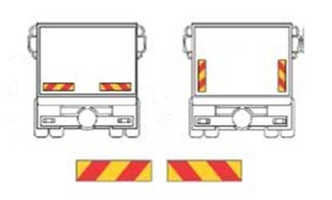
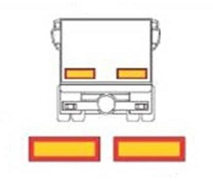
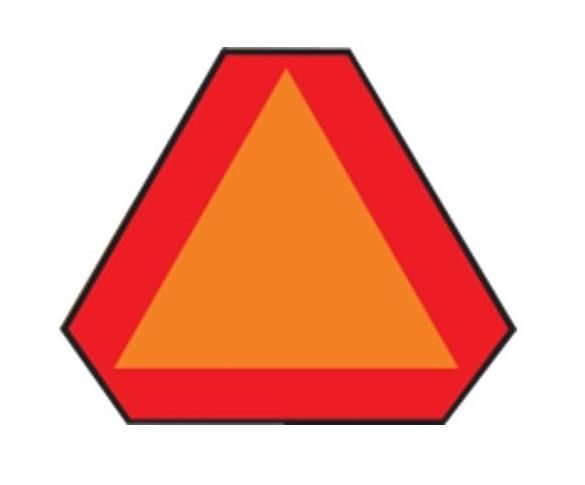

Дальность и цвет света, отражатели, индикаторы и команды.
Uređaj za kočenje — замедлить, остановить, удержать. Radno / parkirno / pomoćno — рабочее / стояночное / вспомогательное торможение. Педали kvačilo — kočnica — gas: сцепление — тормоз — газ.
| Термин |
Запомнить; точные границы по банку B |
| Kratka svetla, ближний |
Белый, 40–80 м (8724) |
| Duga svetla, дальний |
Белый, ≥100 м, синий индикатор (8720, 8726) |
| Prednja svetla za maglu, туман спереди |
≤35 м, белый/жёлтый (8729, 8735) |
| Pokazivači pravca / žmigavci |
Жёлтые; визуальная и звуковая индикация на указанных машинах после 01.07.2011 (8774) |
| Zadnja poziciona / stop / maglenke |
Задние габариты / стоп / туман — красные по лекции |
| Svetla za vožnju unazad |
Задний ход — белые |
| Katadiopteri |
Световозвращатели, отражают чужой свет |
Днём — ближний или дневной (10210). Банк: третий стоп у легковых после первой регистрации в Сербии 01.03.2011 (8769); задний туман 1–2, дата 01.03.2011, с исключениями (10652). В лекции названы другие даты; для теста использовать эти условия.
Brzinomer / kilometar-sat — скорость; odometar — пробег. Для практики из рассказа: pozicija, kratko, dugo, levi, desni — габариты, ближний, дальний, левый/правый поворотник. Sirena / zvučni znak — краткий предупреждающий сигнал. Цвет индикатора заднего тумана ещё требует уточнения; не смешивать с цветом фонаря.
Sva četiri žmigavca — аварийка: посадка/высадка, опасность, резко сниженная видимость, задний ход; последняя машина остановленной вне населённого пункта колонны с исключением остановки по знаку/правилу. Остановка на проезжей части — кроме обозначенной парковки и остановки по знаку/правилу. На красном/у STOP не автоматически. В тумане условие банка не ограничено отсутствием заднего туманного фонаря. 8 · фр. 15–17, вопросы 10046/10048/10050 в конспекте.
Технические различия: ближний — асимметрично вправо; противотуманные спереди — ≤35 м, белые/жёлтые; задний ход, дневные и подсветка номера — белые. У прицепа спереди 2 белых нетреугольных, сзади 2 красных треугольных отражателя, сторона ≥15 см, вершина вверх. 13 · 00:08:34, 13 · 00:09:54, 13 · 00:10:20, 13 · 00:11:22, 13 · 00:12:52, 14 · 00:15:53.
Индикаторы поворотников: до 01.07.2011 — ili (или), после — i (и). Ближний в тоннеле — уточнение банка 10540. Жёлтый маячок не даёт приоритета, используется только в предусмотренных законом случаях. 13 · 00:17:42, 12 · 00:06:02, 12 · 00:27:05.
Проверь себя
B · 8726
2 балл(а) · правильных ответов: 1
Svetlosni snop dugog svetla motornih vozila, osim traktora, mora da osvetli:
- najmanјe 40 m puta
- najmanјe 100 m puta
- najmanјe 80 m puta
Перевод вопроса
Какую дальность должен обеспечивать дальний свет моторных средств, кроме тракторов?
Ответ и ловушка
Правильный ответ: 2.
По-русски: Не менее 100 м дороги.
Дальний: не менее 100, не строго больше
Ловушка: Najmanje включает ровно 100. Лекторское «более 100» ужесточает границу и не является точным ответом.
Слова в вопросе: najmanje 100 m.
B · 10539
2 балл(а) · правильных ответов: 2
Na motornom vozilu za vreme vožnјe noću u saobraćaju na putu, vozač je dužan da umesto dugih svetala upotreblјava kratka:
- kad pri mimoilaženјu sa drugim vozilom oceni da svetlom svog vozila zasleplјuje vozača vozila koje mu dolazi u susret, a uvek na odstojanјu manјem od 250 m
- ako ometa vozača ispred sebe
- na putu u naselјu
- kad pri mimoilaženјu sa drugim vozilom oceni da svetlom svog vozila zasleplјuje vozača vozila koje mu dolazi u susret, a uvek na odstojanјu manјem od 200 m
Перевод вопроса
Когда ночью вместо дальнего нужен ближний в этом вопросе?
Ответ и ловушка
Правильные ответы: 2, 4.
По-русски: Когда мешает водителю впереди; при ослеплении встречного, и всегда при расстоянии до него менее 200 м.
Переключение на ближний: два условия
Ловушка: Два ответа. Не ждать 200 м, если ослепляешь раньше. Вариант 250 м неверный; одно нахождение в населённом пункте здесь тоже не выбранный ответ.
Слова в вопросе: zaslepljuje; uvek na odstojanju manjem od 200 m.
Экзаменационный ориентир
Банк уточняет дальний ≥100 м, а не строго >100 (8726); третий стоп-сигнал у легкового — после первой регистрации в Сербии 01.03.2011, не 2001 (8769); задние противотуманные — дата 01.03.2011 с исключениями (10652). Цвет индикатора заднего тумана по этому набору ещё не подтверждён. Лекторские значения ниже сохранены как источник.
Тормозная система
Uređaj za kočenje — тормозная система: уменьшить скорость, полностью остановить автомобиль, удерживать его на месте. Лектор выделяет 3 вида: radno kočenje — рабочее, педаль; parkirno kočenje — стояночное; pomoćno kočenje — вспомогательное при отказе рабочего. Резкий рывок ручника во время движения может привести к развороту и потере управления; его пример около 180° не является инструкцией к манёвру. 5 · 00:04:17.
Дальность и цвет света
| Сербский |
Русский |
Дальность и признаки; уточнения банка B |
| Kratka svetla |
Ближний |
Белый, 40–80 м, асимметричный пучок вправо — desnosmerni asimetrični |
| Duga svetla |
Дальний |
Белый, не менее 100 м, синий индикатор (8726); лектор говорит «более 100» |
| Prednja svetla za maglu / maglenke |
Передние противотуманные |
Не более 35 м, белые или жёлтые |
| Pokazivači pravca / žmigavci |
Поворотники |
Жёлтые; условия оптической/звуковой индикации по дате приведены ниже |
| Zadnja poziciona svetla |
Задние габариты |
Красные |
| Stop svetla |
Стоп-сигналы |
Красные, при нажатии рабочего тормоза |
| Zadnja svetla za maglu |
Задние противотуманные |
Красные, 1 или 2; точная дата обязательности — ниже |
| Svetla za vožnju unazad |
Фонари заднего хода |
Белые |
| Dnevna svetla |
Дневные ходовые |
Белые; днём ближний или дневные (10210), габаритные их не заменяют |
| Svetlo zadnje registarske tablice |
Подсветка заднего номера |
Белая |
| Katadiopteri |
Световозвращатели |
Отражают чужой свет; форму и цвет различать по месту и виду ТС |
Источники: 5 · 00:05:27, 5 · 00:08:58, 5 · 00:11:38, 12 · 00:03:26, 13 · 00:08:14, 13 · 00:08:34, 13 · 00:10:20, 14 · 00:15:53.
В записи 5 лектор связывает третий стоп с 2001 годом, задние противотуманные — с 2010. Банк даёт другие даты с условием первой регистрации в Сербии: они перечислены в разделе «Даты и условия». 5 · 00:11:38, 5 · 00:11:59.
Синий индикатор предупреждает о возможном ослеплении встречного дальним. Для индикатора заднего тумана оба ASR дают «жёлтый или зелёный» — это требует уточнения и не равно цвету самого фонаря. Повторный ASR даёт ритм поворотника примерно 80 раз в минуту; первый проход искажает единицу. 5 · 00:13:17, повторный ASR.
Панель приборов
Brzinomer, разговорно kilometar-sat — спидометр, показывает скорость. Odometar — счётчик пройденного расстояния; различать скорость и пробег. Лектор перечисляет как обязательные спидометр, одометр, синий индикатор дальнего и сигнал поворотников — 4 устройства; ранее перечисляет 3 индикатора: дальний, задний туман и поворотники. Не смешивать эти два перечня и не считать первый полным каталогом панели. Для ближнего и переднего тумана он говорит, что отдельный индикатор необязателен. 5 · 00:14:56, повторный ASR.
Педали в объяснении слева направо: kvačilo — kočnica — gas, сцепление — тормоз — газ. Лектор показывает, что стоп-сигнал включается сразу при нажатии рабочей тормозной педали. 5 · 00:14:32.
Проверка света и названные санкции
Перед выездом контролировать исправность освещения и сигнализации. В лекции запасной комплект ламп назван необязательным по нынешнему объясняемому порядку; отсутствие запасной лампы не освобождает от требования исправности. 5 · 00:09:23, 5 · 00:10:46.
Лектор описывает проверку перед практическим экзаменом: pozicija, kratko, dugo, levi, desni — габариты, ближний, дальний, левый и правый поворотники. Это последовательность проверки света из его рассказа; нужно понимать названия, чтобы включить нужный прибор. 5 · 00:11:10.
За неисправный передний свет лектор называет 5000 динаров; за задние габариты — не менее 30 000, 6 баллов, 3 месяца запрета. Суммы и условия пересказаны по лекции; особенно важен практический смысл — неосвещённую сзади машину трудно заметить ночью и в тумане. 5 · 00:09:59.
Sirena / zvučni znak — звуковой сигнал: по заключению записи 6 использовать в достаточной мере и как можно короче, для предупреждения. 6 · 00:23:05.
Статус сверки
Дальность дальнего и даты оборудования уточнены по вопросам 8726/8769/10652. Цвет индикатора заднего тумана и полнота перечня устройств панели остаются вопросами для проверки. Цвет индикатора и цвет излучаемого света — разные признаки. Журнал проверки.
Все поворотники: когда включать аварийку
Sva četiri pokazivača pravca / žmigavca — все указатели направления, аварийная сигнализация. В лекции 8 перечислены посадка/высадка, предупреждение о резком замедлении/опасности, сильный туман или дым, последняя машина остановленной колонны вне населённого пункта, задний ход и остановка на проезжей части. 8 · фр. 15–17.
Банк B уточняет условия, которые легко потерять в повторённой фразе «при любой остановке»:
| Условие |
Что запомнить |
| Посадка/высадка; предупреждение опасности |
Нужны все указатели (10046) |
| Izrazito smanjena vidljivost |
Резко сниженная видимость: густой туман, дым; обязанность не сформулирована только для машин без заднего тумана (10048) |
| Последний в остановившейся вне населённого пункта колонне |
Нужна аварийка, кроме остановки вследствие знака или правила. Просто двигаться последним — другое условие (10048) |
| Kretanje unazad, задний ход |
Нужна аварийка; белый фонарь заднего хода не заменяет её (10050) |
| Остановка на проезжей части |
Исключения: парковка на обозначенном месте и остановка по знаку/правилу (10050). Красный светофор не требует аварийки сам по себе |
Задние противотуманные и аварийка — разные приборы. Лектор советует при тумане включить задний туман, а при его отсутствии аварийку; банк 10048 не ограничивает требование аварийки отсутствием туманного фонаря. Аварийка предупреждает, но не разрешает запрещённую остановку и не заменяет закрепление машины. 8 · фр. 15–17, остановка и закрепление.
Туман, припаркованная машина и жёлтый маячок
Ночью переключаться на ближний при встречном разъезде на расстоянии менее 200 м, при ослеплении водителя впереди, на освещённой дороге, при остановке и в тумане; условия важнее одной цифры. 12 · 00:03:26, 12 · 00:05:24, 12 · 00:06:39.
В тумане банк 10543 требует ближний, либо противотуманные, либо оба вида вместе; дневные и дальний не подходят. Объяснение преподавателя «в неосвещённом тоннеле нужен дальний» не следует превращать в исключение: банк B 10540 требует ближний в тоннеле. Рассказ о трёх обязательных индикаторах и их цветах тоже не полный перечень приборов; прежние уточнения банка о заднем противотуманном сохраняются. 12 · 00:04:50, 12 · 00:06:02.
Parkirna / poziciona svetla — парковочные / габаритные огни. При стоянке ночью в неосвещённом населённом месте лектор показывает обозначение стороны машины, обращённой к середине дороги; у некоторых машин можно включить только одну сторону. Автоматический текст в этом месте смешивает парковочные огни с ближним: не считать его указанием оставлять ближний на всю ночь. 12 · 00:06:52.
Žuto rotaciono ili trepćuće svetlo — жёлтый вращающийся или мигающий маячок. Предупреждает о работах, препятствии и особом характере машины; не даёт приоритета синей мигалки. Увидел — повысить внимание и выбрать безопасную скорость. Преподаватель перечисляет дорожные/коммунальные машины, эвакуаторы, негабаритную сельхозтехнику, трактор с рабочим оборудованием. 12 · 00:27:05, 12 · 00:27:34, 12 · 00:28:46.
Покупка маячка сама по себе не даёт права пользоваться им на личной машине. Его применение банк 10401 разрешает только в предусмотренных законом случаях; слова лектора о поломке/ДТП читать с этим условием. 12 · 00:28:14.
Клаксон и предупреждение фарами
Zvučni znak upozorenja / sirena — звуковой сигнал; на обычной машине равномерный тон, не специальная переменная сирена. Пользоваться по необходимости для безопасности и кратко, не для выражения недовольства. Преподаватель разбирает предупреждение детей у дороги, обгон за городом и непросматриваемую узкую кривую; не сужать условие «предупредить перед обгоном при опасности» только до грузовиков из его примера. 10 · 00:07:36, 10 · 00:08:15, 10 · 00:08:33, 10 · 00:09:22, 10 · 00:09:41.
Svetlosni znak upozorenja / ablendovanje — краткое чередование дальнего и ближнего. Применяют прежде всего ночью; лектор также приводит дневное предупреждение о патруле. Это рассказ о привычке водителей, не экзаменационная цель такого сигнала и не повод ослеплять встречных. 10 · 00:10:48.
Технический блок: свет и отражатели
Osvetljavanje puta — освещение дороги, označavanje vozila — обозначение машины. В вопросе 8714 дорогу освещают glavni farovi, svetla za vožnju unazad, svetla za maglu — основные фары, фонарь заднего хода и передние противотуманные. Задняя противотуманная, габаритные и отражатели из вариантов этой функции не выполняют. Katadiopter отражает чужой свет, не является фарой. 13 · 00:05:20, 14 · 00:22:08.
Nivelacija snopa — регулировка высоты светового пучка при загрузке; обязательна для пассажирских и грузовых машин, а не только для газоразрядного ближнего (8723). Парные однотипные устройства должны быть одинакового размера/цвета и с равномерным световым действием (8713); оговорка лектора «приблизительно» не делает допустимой явно тусклую одну фару. 13 · 00:04:34, 13 · 00:07:14.
У прицепа спереди 2 белых нетреугольных отражателя, сзади 2 красных равносторонних треугольника, вершиной вверх, сторона не менее 0,15 м / 15 см (8755/8757). Машина со скрывающимися фарами тоже имеет два белых нетреугольных отражателя спереди (8756). 13 · 00:11:22, 13 · 00:12:29, 13 · 00:12:52.
Даты и условия
- Контроль поворотников: до первой регистрации в Сербии 01.07.2011 — оптический или звуковой; после этой даты у пассажирских/грузовых — оба. Узнать ili / i — или / и (8773/8774). 13 · 00:17:42.
- Третье стоп-светло у легкового после первой регистрации в Сербии 01.03.2011, симметрично относительно продольной средней плоскости (8769). Стоп-сигнал включается рабочим тормозом; не обязателен для указанных медленных машин/прицепов, которые не развивают более 25 км/ч (10657). 13 · 00:16:12, 13 · 00:16:53, 14 · 00:16:33.
- Задние противотуманные: 1 или 2 после первой регистрации в Сербии 01.03.2011 для перечисленных в вопросе видов; не обязательно два и не обязательно только один (10652). 14 · 00:15:11.
Таблички сзади и сплошная
В лекции различают teško / dugo / sporo vozilo — тяжёлое / длинное / медленное ТС. В банке 8760 — красно-жёлтые диагональные полосы; 8761 — жёлтые прямоугольники с красной окантовкой; 8762 — оранжевый треугольник с красной каймой. Изображения доступны в карточках ниже. 13 · 00:14:16.
Табличка медленной машины сама по себе не отменяет сплошную: разбор этого утверждения преподавателя — в теме обгона и объезда.
Проверь себя
Вопросы банка B по теме. Сначала реши сам, затем открой перевод или разбор.
B · 8726
2 балл(а) · правильных ответов: 1
Svetlosni snop dugog svetla motornih vozila, osim traktora, mora da osvetli:
- najmanјe 40 m puta
- najmanјe 100 m puta
- najmanјe 80 m puta
Перевод вопроса
Какую дальность должен обеспечивать дальний свет моторных средств, кроме тракторов?
Ответ и ловушка
Правильный ответ: 2.
По-русски: Не менее 100 м дороги.
Дальний: не менее 100, не строго больше
Ловушка: Najmanje включает ровно 100. Лекторское «более 100» ужесточает границу и не является точным ответом.
Слова в вопросе: najmanje 100 m.
B · 10539
2 балл(а) · правильных ответов: 2
Na motornom vozilu za vreme vožnјe noću u saobraćaju na putu, vozač je dužan da umesto dugih svetala upotreblјava kratka:
- kad pri mimoilaženјu sa drugim vozilom oceni da svetlom svog vozila zasleplјuje vozača vozila koje mu dolazi u susret, a uvek na odstojanјu manјem od 250 m
- ako ometa vozača ispred sebe
- na putu u naselјu
- kad pri mimoilaženјu sa drugim vozilom oceni da svetlom svog vozila zasleplјuje vozača vozila koje mu dolazi u susret, a uvek na odstojanјu manјem od 200 m
Перевод вопроса
Когда ночью вместо дальнего нужен ближний в этом вопросе?
Ответ и ловушка
Правильные ответы: 2, 4.
По-русски: Когда мешает водителю впереди; при ослеплении встречного, и всегда при расстоянии до него менее 200 м.
Переключение на ближний: два условия
Ловушка: Два ответа. Не ждать 200 м, если ослепляешь раньше. Вариант 250 м неверный; одно нахождение в населённом пункте здесь тоже не выбранный ответ.
Слова в вопросе: zaslepljuje; uvek na odstojanju manjem od 200 m.
B · 8774
2 балл(а) · правильных ответов: 1
Na vozilima za prevoz putnika i teretnim vozilima, koja su prvi put registrovana u Republici Srbiji nakon 1. jula 2011. godine, kontrola uklјučenosti pokazivača pravaca, mora biti obezbeđena:
- samo pomoću zvučne kontrolne naprave
- pomoću optičke ili zvučne kontrolne naprave
- pomoću optičke i zvučne kontrolne naprave
Перевод вопроса
Какая индикация нужна на легковых/грузовых, впервые зарегистрированных в Сербии после 1 июля 2011?
Ответ и ловушка
Правильный ответ: 3.
По-русски: И визуальная, и звуковая.
И, а не или, для индикаторов поворотников
Ловушка: Оптическая или звуковая — другой вариант с другим смыслом. Дата относится к первой регистрации в Сербии.
Слова в вопросе: optičke i zvučne; nakon 1. jula 2011..
B · 8769
2 балл(а) · правильных ответов: 1
Putnička vozila koja su prvi put registrovana u Republici Srbiji nakon 1. marta 2011. godine moraju imati:
- najmanјe četiri stop svetala
- stop svetla u obliku kruga, čiji je poluprečnik najmanјe 0,15 m
- treće stop svetlo ugrađeno simetrično u odnosu na srednјu uzdužnu ravan vozila
Перевод вопроса
Когда легковому автомобилю нужен третий стоп-сигнал по этому вопросу?
Ответ и ловушка
Правильный ответ: 3.
По-русски: Если впервые зарегистрирован в Сербии после 1 марта 2011 года; установка симметрично продольной плоскости.
Третий стоп-сигнал: дата в банке
Ловушка: В лекции распознано 2001, банк даёт 2011 и уточняет именно первую регистрацию в Сербии.
Слова в вопросе: prvi put registrovana u Republici Srbiji; nakon 1. marta 2011..
B · 10652
2 балл(а) · правильных ответов: 1
Na vozilima koja su prvi put registrovana u Republici Srbiji nakon 1. marta 2011. godine, osim na mopedima, motociklima, triciklima, četvorociklima, traktorima i priklјučnim vozilima za traktor:
- moraju biti ugrađena najmanјe dva zadnјa svetla za maglu
- mora biti ugrađeno jedno ili dva zadnјa svetla za maglu
- mora biti ugrađeno samo jedno zadnјe svetlo za maglu
Перевод вопроса
Сколько задних противотуманных фонарей нужно средствам, впервые зарегистрированным в Сербии после 1 марта 2011, с перечисленными исключениями?
Ответ и ловушка
Правильный ответ: 2.
По-русски: Один или два задних противотуманных фонаря.
Задний туман: один или два
Ловушка: Не только один и не обязательно минимум два. В лекции названа связь с 2010 годом; банк даёт 1 марта 2011 и исключает мопеды, мотоциклы, трициклы, квадрициклы, тракторы и прицепы к трактору.
Слова в вопросе: jedno ili dva; nakon 1. marta 2011..
B · 10046
2 балл(а) · правильных ответов: 2
Vozač je na javnom putu dužan da uklјuči sve pokazivače pravca na vozilu:
- kada se zaustavio ispred prelaza puta preko železničke pruge
- za vreme ulaska ili izlaska putnika
- kada se kreće kao poslednјi u koloni na putu van naselјenog mesta
- ako upozorava druge učesnike na opasnost u saobraćaju
Перевод вопроса
В каких из перечисленных ситуаций на дороге общего пользования нужны все указатели направления?
Ответ и ловушка
Правильные ответы: 2, 4.
По-русски: При посадке/высадке пассажиров и предупреждении других об опасности.
Посадка и опасность, а не любая колонна
Ловушка: Последний в движущейся колонне и остановка перед переездом не дают нужного условия в этом вопросе. Выбрать два ответа.
Слова в вопросе: ulaska ili izlaska putnika; opasnost.
B · 10048
2 балл(а) · правильных ответов: 2
Vozač je na javnom putu dužan da uklјuči sve pokazivače pravca na vozilu:
- u uslovima izrazito smanјene vidlјivosti (gusta magla, dim i sl.)
- kada se kreće kao poslednјi u koloni na putu van naselјenog mesta
- kada se zaustavio iza vozila za organizovani prevoz dece u koje deca ulaze ili izlaze
- ako je poslednјi u koloni vozila koja se zaustavila na putu izvan naselјa, osim ako je kolona zaustavlјena zbog postupanјa po saobraćajnom znaku ili pravilu saobraćaja
Перевод вопроса
Когда в перечисленных случаях требуется аварийка?
Ответ и ловушка
Правильные ответы: 1, 4.
По-русски: При резко сниженной видимости и у последнего в остановившейся вне населённого пункта колонне, кроме остановки из-за знака или правила.
Остановленная колонна с исключением
Ловушка: Не путать движущуюся и остановленную колонну. Исключение zbog postupanja po znaku ili pravilu нельзя отбросить.
Слова в вопросе: izrazito smanjena vidljivost; osim; zaustavila.
B · 10050
2 балл(а) · правильных ответов: 2
Vozač je na javnom putu dužan da uklјuči sve pokazivače pravca na vozilu:
- kada vrši polukružno okretanјe
- ako se zaustavi na kolovozu zbog postupanјa po saobraćajnom znaku ili pravilu saobraćaja
- ako se kreće unazad
- ako se zaustavi na kolovozu, osim prilikom parkiranјa na obeleženom parkingu, odnosno zbog postupanјa po saobraćajnom znaku ili pravilu saobraćaja
Перевод вопроса
Когда в перечисленных случаях нужны все указатели направления?
Ответ и ловушка
Правильные ответы: 3, 4.
По-русски: При движении назад и остановке на проезжей части с исключениями для обозначенной парковки и остановки по знаку/правилу.
Не всякая остановка требует аварийки
Ловушка: Разворот — не задний ход. На красном или у STOP аварийка не требуется только из-за факта остановки.
Слова в вопросе: kreće unazad; osim prilikom parkiranja; zbog postupanja.
B · 8760
2 балл(а) · правильных ответов: 1
Oznaka prikazana na slici služi za označavanјe:

- dugih vozila
- sporih vozila
- teških vozila
Перевод вопроса
Для обозначения каких машин служит показанная табличка?
Ответ и ловушка
Правильный ответ: 3.
По-русски: Тяжёлых транспортных средств.
Диагональные полосы тяжёлой машины
Ловушка: Красно-жёлтые диагональные полосы отличаются от жёлтого прямоугольника с красной каймой у длинных и от треугольника у медленных.
Слова в вопросе: teških; dugih; sporih.
B · 8761
2 балл(а) · правильных ответов: 1
Oznaka prikazana na slici služi za označavanјe:

- dugih vozila
- sporih vozila
- teških vozila
Перевод вопроса
Для обозначения каких машин служит показанная табличка?
Ответ и ловушка
Правильный ответ: 1.
По-русски: Длинных транспортных средств.
Жёлтые прямоугольники длинной машины
Ловушка: Жёлтое поле с красным контуром; не путать с диагональными полосами тяжёлой машины.
Слова в вопросе: dugih; teških.
B · 8762
2 балл(а) · правильных ответов: 1
Oznaka prikazana na slici služi za označavanјe:

- teških vozila
- dugih vozila
- sporih vozila
Перевод вопроса
Для обозначения каких машин служит показанная табличка?
Ответ и ловушка
Правильный ответ: 3.
По-русски: Медленных транспортных средств.
Треугольник медленной машины
Ловушка: Оранжевый треугольник с красной каймой — обозначение машины, не отдельно выставленный треугольник за сломанной машиной.
Слова в вопросе: sporih; oznaka.